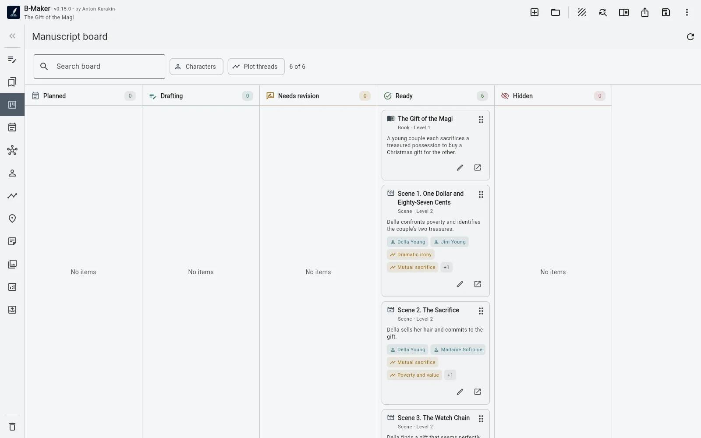
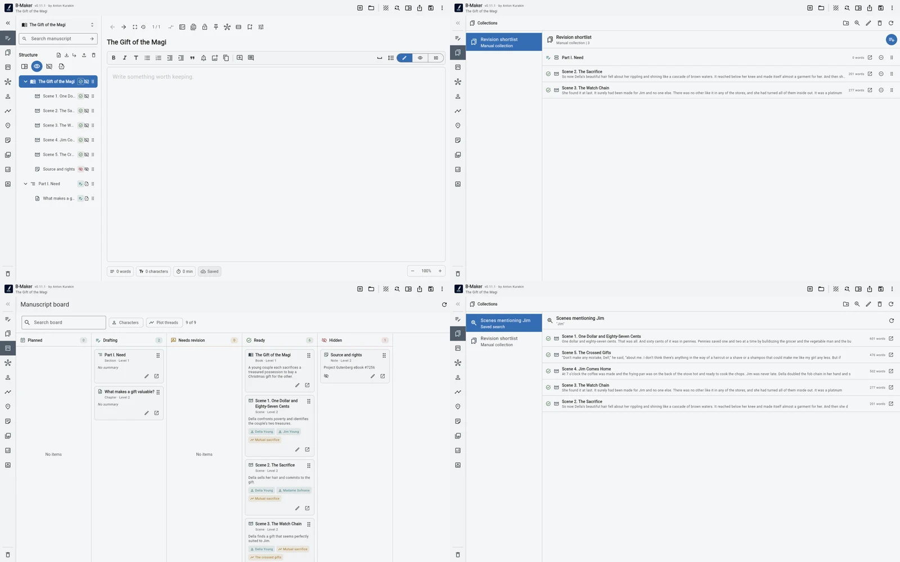

The manuscript tree answers “what is the actual order of the book?” Collections, searches and boards answer temporary working questions without creating another master outline.
The book has an order. Your attention does not.
A manuscript might be Chapter 1, Chapter 2, Chapter 3, and so on. But on Tuesday morning you may not care about that order. You may need every scene involving one character. Or every section still marked Draft. Or the five chapters an editor commented on. Or three articles that may become one future part.
The mistake is to solve those temporary questions by rearranging the real manuscript or maintaining a second outline beside it.
The tree is the structural source of truth
In B-Maker the manuscript tree represents the actual hierarchy and sequence of the work. Chapters and nested sections live there. If you move something in that tree, you are changing the book itself.
That makes the tree intentionally boring in a useful way: it has one job. It tells you what the manuscript is.

A collection changes focus, not structure
Suppose five chapters need revision this week. Moving them next to each other in the book would be absurd. A manual collection can gather those chapters into a temporary working set with its own order while the manuscript remains untouched.
The same mechanism can collect every piece related to one theme, every candidate chapter for a future part, or a reading sequence you want to test. The collection is a lens over the project, not a new copy of it.
A saved search can make the view dynamic
Sometimes even a collection is too manual. If the question is “show me every draft scene,” or “show sections containing this phrase,” a saved search can keep answering it as the manuscript changes.
This matters because temporary organization should be cheap. If you have to maintain a dashboard by hand, the dashboard eventually becomes inaccurate and turns into another source of truth.
assets/img/bmaker/bmaker-story-views-02.webpThe board answers a different question again
A manuscript board is useful when sequence matters less than state. It can show the work by status and filter it by characters or plotlines. That is a management view: what is drafted, what is being revised, what is finished, where does this character appear?
But moving your attention across the board still does not require reconstructing the book elsewhere. The cards refer to the same manuscript elements.
Multiple views prevent organizational drift
The benefit is not the number of views. It is the absence of duplicate truth. The tree, collection, search result, Idea Map node and board card can all refer to the same underlying project element.
That reduces a familiar kind of writing admin: updating the outline after changing the manuscript, updating the spreadsheet after changing the outline, and then wondering which representation is current.
Use the lightest view that answers the question
If the manuscript tree is enough, stop there. If you need a temporary list, use a collection. If the list should update itself, use a saved search. If you need to think in status or story dimensions, open the board. If you need spatial relationships, use Idea Map.
Organization should be reversible and cheap. The manuscript itself should remain the stable center.
Related stories
Start writing first · From idea to chapter · From articles to a book
Reorganize your attention, not your manuscript.
Keep one book structure and create temporary views when the work asks a different question.